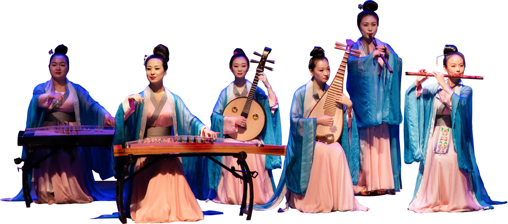
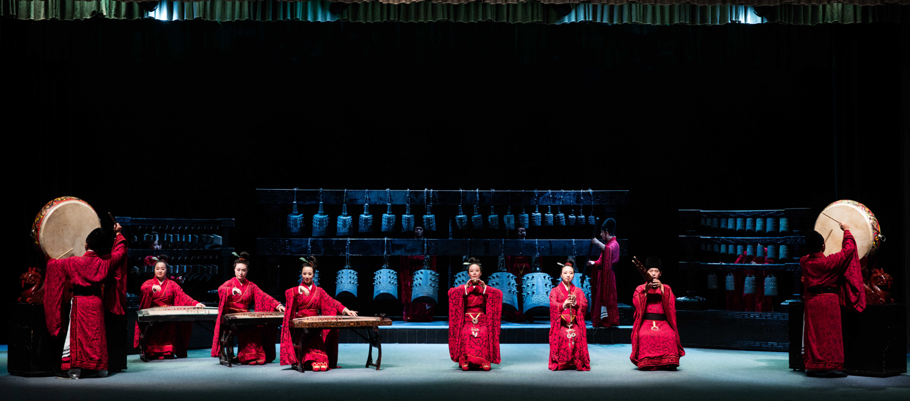
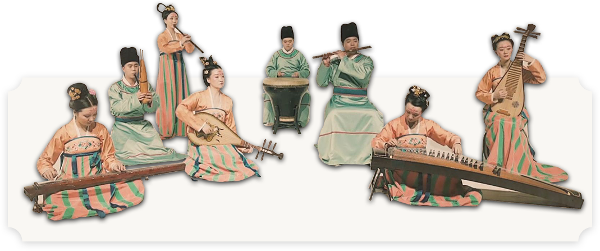

华夏古乐团
中原音乐文化历史
上下九千年的文化积淀，使中国音乐历史在世界音乐史上占有举足轻重的地位。而中原音乐文化则可称之为是一颗璀璨的明珠，她不仅栩栩生辉而且光彩夺目。
河南的音乐历史发展得天独厚，在史书中，不乏黄河流域原始部落的葛天氏之乐、大禹治水之歌的《大夏》之乐，商人“恒舞于宫，酣歌于室”的记载。春秋战国时期的郑卫之声，更是作为一代新音乐的代表，使听者“乐此不倦”。在中原大地上，生动热烈的民间音乐，源远流长，几千年连续无间。
河南近几年来出土的音乐文物，更是以其多样性和丰富性为世人瞩目。特别是上古时代的乐器，占河南出土音乐实物的百分之九十以上。舞阳贾湖出土的距今九千年的贾湖骨笛，五千年前的陶鼓与陶埙，四千年前龙山文化时期的特磬，三千年前夏王宫的铜铃，安阳殷墟的编铙、鱼形磬；西周应国和虢国的编钟，两周时期各类钟磬鼓瑟、管箫琴笙等，这些乐器不仅形制独特，且音域和音准很多接近现代音乐。她们精美的制作与和谐的音律，不仅代表着中国古代音乐史上的高超水平，而且具有极高的研究价值和演出前景。丰富多彩的音乐文物，无不向我们展示着、传播着来自远古的音乐信息,组成这样一台仿古音乐，一直是我国许多著名音乐考古专家和乐律学专家所汲汲追求的目的。
组件华夏古乐团
中原自古为礼乐之邦，源远流长的传统文化，丰富多彩的音乐文物资源，如果真正化为震撼人心的旋律，不仅对我院音乐考古研究、追求国内外先进水平有极高的价值，而且还将会产生难以估量的社会效益。为把这种追求变成现实，让河南博物院以更为亲切可感的形象贴近公众，国内知名专家及河南博物院有关人事经过反复论证取得了共识：决定组建河南博物院华夏古乐艺术团。
在筹建过程中，我们受到了从中央到地方各级领导的关心与支持，李鹏委员长、丁关根部长等都对我们的古乐团给予了热情的关注，马忠臣书记、李克强省长等省委和省政府的领导，不止一次给予我们指示和帮助。为回报社会各界朋友们的关心和支持、弘扬民族文化、振兴我省旅游事业的发展，我们利用这些原始出土的音乐文物，让华夏民族沉寂几千年的古典音乐之声在我们博物院重新响起，使其不仅成为河南博物院文物陈列的一种延伸，同时也成为河南旅游事业一道亮丽的风景线。
隆重开幕

在省委、省政府、宣传部、文化厅、文物局等各界领导的关怀下、在各大新闻媒体及各方来宾的支持下，在河南博物院的专业人员正与全国知名的古代音乐研究学者密切合作下，2000年4月1日华夏古乐团迎来了一个难忘的日子，盛大的新闻发布会后，伴随着优美动听的古代音乐，身着战国风格广袖深衣的演员们奏响了华夏古乐团的第一乐章 骨笛陶埙，奏响先民天籁之声，钟鼓磬瑟，回旋三代庙堂雅乐，箫管琴笙，飞扬两周陌野风情。音乐声声，古钟铿锵，人们仿佛领略到了上古音乐的幽远、汉乐的魅力、唐代宫廷乐的繁荣、宋朝杂剧的绝妙、明清歌舞的风骚。华夏古典音乐的丰富内涵正以其独特的风格展示于中原，推向世界，并将使全世界更多的人们领略到中华古乐的辉煌与灿烂。
千年古乐的盛世再现，是我们献给新世纪的一份厚礼。
服饰

演奏员的服装，是根据信阳长台关战国早期墓中所出彩绘木俑身上的服饰设计制作的，春秋战国时期，中原一带佩玉盛行，人们用玉来代表对美好生活的追求，我们特地以组合玉佩的考古资料为依据，在具有中原特色的右衽直裾深衣上加饰佩玉，另外，女性的发型则是出于光山县黄国国君孟姬夫人的发饰；而男性的冠式叫玄冠，是先秦贵族出行、宴宾、交往时所戴的礼服，构成上古中原服饰一道亮丽的美景。
乐器复制
首先，我们复制了中原上古时期最具代表性的近二十件乐器。王孙诰编钟的宏大，虎座凤鼓的气势，舞阳骨笛的古老，漆绘绵瑟的华美等，无不保存着传统音乐中“金、石、土、革、丝、木、匏、竹”的“八音”，即八种质地乐器的奇特配置；然后我们通过中国知名的音乐史学家对古代乐曲的研究、创编、配器，使土鼓陶埙，奏出史前先民与大自然息息相通的天籁之声；钟磬瑟管，回旋三代庄严肃穆的庙堂雅乐。丰富的音乐史料一旦化为震撼人心的旋律，人们便可真切的感受古代音乐文化瑰丽、清远、神秘的意境。
尾声
河南博物院华夏古乐团自开业以来，备受中外观众的欢迎，曾先后接待了吴邦国、李长春、李鹏、李铁映、丁关根等国家领导人、韩国总统金咏三、泰国王后、各国驻外使节、俄罗斯芭蕾舞团、日本爱乐乐团、韩国庆尚北道乐团等等。
演出事时间：
上午 11：00 下午 16：00
(除博物院周一闭馆，不包括法定公共假期)
地址：很呐博物院主展厅一楼西侧华夏古乐厅
票价：40元
河南博物院华夏考古乐团利用先人留给我们的音乐文物，配器成乐，再加上音乐考古学家的古曲创编，使我们的炎黄子孙可从中品味到河南史前先民草莽的笛声，夏王宫女乐的唱和，商代王宫中的恒歌酣舞，郑韩城内歌钟的悠扬，桑间濮上士女的欢唱，信阳楚王城的鼓声，丹江岸边王子王孙的钟乐，以史作证，以物为鉴，这里奏响的将是上古华夏民族的心灵之声。
- 镇院之宝
- 数字文物
- 文物品鉴
- 藏品精粹
- 中原藏珍
- 社教活动
- 教育品牌
- 华夏古乐团
- 云端古乐厅
- 音乐文物
- 关于原创
- IP授权
- 线上商城
- 文创产品
- 学术活动
- 中原文物
- 河南博物院院刊
- 研究成果
- 专家学者
- 展览咨询
- 院内动态
- 公告通告
- 媒体关注
- 本院概括
- 建院历史
- 机构设置
- 理事会
- 博物院章程
- 党的建设
- 文明创建
- 对外交流
- 大事记
- 年报
- 豫博壁纸
- 视频展播
- 文化专题
- 文物保护
- 专业课培训
- 河南博物馆学会